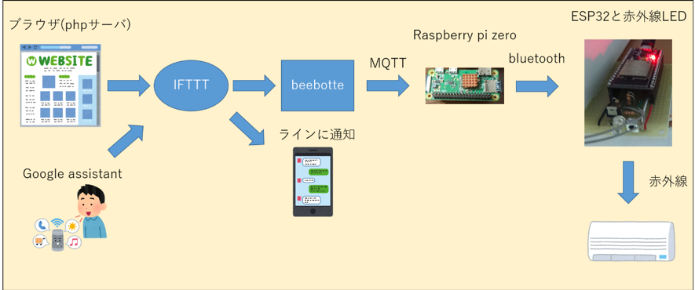
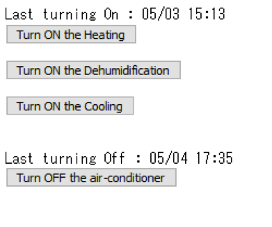
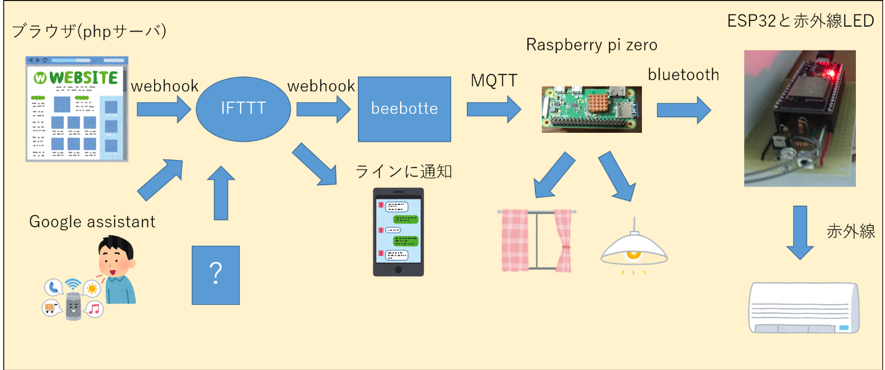

赤外線対応エアコンをインターネットを用いて操作する方法

著者Twitter：https://twitter.com/y7tsy
注:この記事は、作成の時間の都合と読みやすさを優先するために論文のフォーマットは採用していません。 また、新規性に欠けるところはおよそリンクを貼るだけとしております。
システム概要

システムの概略を上図1-1に示す。 スマートフォンやパソコンで、特定のサイトを開くこと、また、google assistantに「OK google,冷房/除湿/暖房をいれて」「OK google、エアコンを止めて」と指示することで、IFTTT、beebotte、rapsberry pi、ESP32を経由し、ESP32が特定の赤外線のシグナルを発信する。 これによってエアコンを操作するのである。 なお、ラインへの通知はおよそデバッグ用である。
ブラウザでの情報処理について
多くのインターネット上のブログでは、スマートスピーカから情報を送信するものが多くみられる。 しかし、外出先からの動作を考慮し、また、拡張性の高さを求め、ブラウザからの指令を行えるように設計した。 もちろん、このブラウザは作成者しかリンクを知らないため、第三者は利用できない。 それに加え、パスワードも実装してある。
執筆時のブラウザ画面を下図1-2に載せる。

ここで、サーバーはXSERVERを利用している。 これは、オンラインのレンタルサーバであり、無料でPHPサーバを作成できる。 当初、raspberry piにこのサーバ機能を持たせようと考えたが、ipアドレスの設定に手間がかかることを踏まえ、却下した。 さて、このサーバにはいくつかのファイルが存在する。 上図1-2内上のボタンにリンクが紐づけられており、指定したPHPを実行するように設定されている。 このPHPがwebhookを介し、IFTTTに指示を出す。 附録1として、PHPからwebhookを介してIFTTTTのトリガーを起動させる最低限のプログラムを載せておく。 上図1-2において、最後に操作された日時と時間が表示されているのが分かる。 ブラウザから操作されたタイミングをテキストファイルで保存しており、その最新の日時を表示させているのである。 これはrapberry piにサーバを担わせていた仕様の名残でもある。 この情報を機械学習などを用いて解析することで、エアコンを操作するタイミングの特徴を抽出し、ラインなどに「冷房をつけましょうか」といった通知を送るような機能の実装を計画していた。
google assistant、IFTTT及びbeebotteの処理について
先に述べておくが、開発はIFTTTよりもbeebotteの設定を先に行った。 これは、IFTTTの設定時にbeebotteの情報が必要だからである。
さて、google assistantとIFTTTの連携は非常にシンプルに構成できる。 私は https://qiita.com/sesame525/items/fba27b41bec3aebd3de0 を主に参考にした。 また、IFTTTからbeebotteの設定は https://qiita.com/minatomirai21/items/4c4e777b43ede1e42900 (*3-1) を参考にした。 さて、肝心のIFTTTの設定だが、ブラウザ側から、PHPがwebhookを介してIFTTTにPOSTする場合、IFTTTのIF、THIS、THEN、THATのTHISをwebhookに設定する。 THATの設定は *3-1 に従う。 即ち、THIS、THAT両方ともwebhookというアップレットが必要である。 ここで、実装した機能は、冷房ON、除湿ON、暖房ON、エアコンOFFの4種類である。 これをブラウザとgoogle assistantからそれぞれ情報を得るため、合計8個のアップレットが必要となるのである。 IFTTTの設定を下表3-1に示す。 なお、ラインへの通知はデバッグ用のため省略した。
| THIS | THAT | POSTデータ(JSON) ※あくまで一例 |
|
|---|---|---|---|
| ブラウザ⇒冷房ON | webhooks | webhooks | A |
| ブラウザ⇒除湿ON | webhooks | webhooks | B |
| ブラウザ⇒暖房ON | webhokks | webhooks | C |
| ブラウザ⇒エアコンOFF | webhooks | webhooks | D |
| Google assistant⇒冷房ON | Google assistant | webhooks | A |
| Google assistant⇒除湿ON | Google assistant | webhooks | B |
| Google assistant⇒暖房ON | Google assistant | webhooks | C |
| Google assistant⇒エアコンOFF | Google assistant | webhooks | D |
表3-1 IFTTTの設定
MQTT及びrapsberry piのプログラムについて
raspberry piがMQTT通信を用いて、beebotteからの情報を受け取る。 pythonで処理できるため、処理が簡単になる。 https://qiita.com/msquare33/items/9f0312585bb4707c686b を主に参考にした。 ここで、簡単にraspberry piについて説明する。 raspberry piは数千円で購入できる、linux様のコンピュータである。 wifiやbluetooth、usbなどインターフェースも申し分なく、サーバーコンピュータとしては省電力である。 詳しくはこちらを参考にされたい。 今回、常に起動させておく必要があり省エネであることが求められ、また、スレーブの増設への対応の設定を行うためのユーザーインターフェースが整っており、安価であるという点からこのraspberry piを選定した。
pythonからbluetoothを用いたESP32との通信
raspberry piはサーバであり、そこから複数の距離の離れたスレーブに情報を送信する。 そしてそのスレーブが各々の家電を操作するのである。サーバとスレーブ(クライアント)間の無線通信は技適を取得している製品を用いるのが望ましい。 また、電子回路を制御するためのマイコンがあれば、赤外線LEDを制御しやすい。 このような、技適を取得し、扱いやすいマイコンの機能を有するESP32を採用した。 これは900円という安さながら、wifi、bluetoothも利用できるマイコンである。 その中でも扱いやすくなったこのモジュールを利用した。 bluetoothを利用するにあたって、raspberry piはpythonで、ESP32がarduino IDEというC++様な言語を用いた。 附録2として、pythonでbluetoothを送信するプログラムを、附録3としてESP32でbluetoothを受信するプログラムを載せる。
赤外線LED及び受信機の回路設計とプログラムについて
どのような赤外線信号を出せばエアコンが動くかは、その付属のリモコンの信号を解析するのが正確である。 ここで、それぞれ受信と送信を行う回路を組まなければならない。 受信機の回路は https://qiita.com/takjg/items/e6b8af53421be54b62c9 を参考に、赤外線LEDの回路は https://www.hibihogehoge.com/2017/04/arduinomosfet1.html を参考に組んだ。
プログラムは二つ用意する必要がある。 最初にリモコンの赤外線シグナルを受信し解析するプログラムで赤外線シグナルのデータを読み込むプログラム(プログラム6-Aとする)と、そこで出力されたデータをもとに赤外線LEDを発行させるプログラムである(プログラム6-Bとする)。 ESP32で赤外線LEDを利用するためのライブラリであるIRremoteESP8266を用いた。 プログラム6-AはサンプルスケッチのIRrecvDumpV2のピン番号を設定し直したプログラムである。 これを書き込み、シリアルモニタを起動させ、リモコンのボタンを押すと赤外線のシグナルの構造データを得られる。 プログラム6-BはサンプルスケッチのIRsendDEMOにプログラム6-Aで得られたデータを書き込んだものである。
今後の展望
1章でも述べたように、それぞれの操作と時間の関係を解析し、ユーザに提案するようなシステムを構築したい。
また、寝室の蛍光灯やカーテンの開閉をこのシステムに組み込みたい(下図7-1)。 これは起床を促進させる可能性があると考えている。そして、図1-2のブラウザ画面のような見た目が良くないものを、CSSを用いて扱いやすく、視覚的に好印象を与えるようなものに改良したい。
今、新型コロナウイルスにより加工機械が利用できないため、新しい端末の開発の速度が低迷している。

附録
附録1 : PHPからwebhookを介してIFTTTTのトリガーを起動させるプログラム
参考にしたサイト https://amg-solution.jp/blog/14245
＜著作権を鑑み、消去しました＞
附録2 : pythonでbluetoothを用いてテキストデータを送信するプログラム
参考にしたサイト https://stackoverrun.com/ja/q/10556918
＜著作権を鑑み、消去しました＞
附録3 : arduino IDEでbluetoothを用いてテキストデータを受信するプログラム
以下はセミコロン(;)までを読み込むプログラムである。
#include "BluetoothSerial.h"
BluetoothSerial SerialBT;
void setup() {
Serial.begin(115200);
SerialBT.begin("ESP32test");
}
void loop() {
if (SerialBT.available()) {
String receiveDeta;
char gotchar;
do {
gotchar = SerialBT.read();
receiveData = receiveDeta + String(gotchar);
} while (int(gotchar) != 59);
print(receiveDeta);
}
}
- 前の記事 : 線形混合効果モデル
- 次の記事 : 【勉強会資料 2020 第1回】Python会とは? / Pythonの基礎
- 関連記事 :